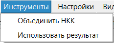
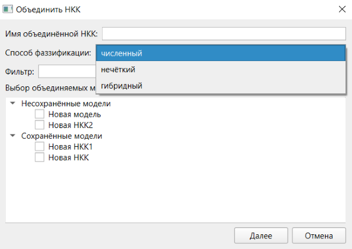
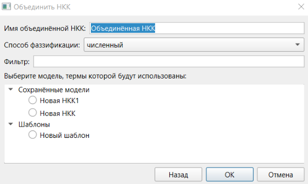

1. Объединение НКК необходимо для агрегации экспертных оценок. Его можно выполнить при помощи опции «Объединить НКК» меню «Инструменты»:

2. В результате выбора опции будет открыто окно объединения НКК. В данном окне представлены все сохранённые и несохраненные модели. Может быть осуществлена фильтрация по вхождению в названия моделей строки из поля «Фильтр». В любой момент в данном окне может быть изменено «Имя объединённой НКК» и «Способ фаззификации». Для выбора доступно 3 способа фаззификации: на основе численных значений, не основе нечётких значений и на основе и численных, и нечётких значений одновременно (гибридный).

3. После выбора моделей для объединения необходимо нажать кнопку «Далее». В результате будет выполнен переход к выбору модели, термы которой будут использованы для объединения. На данном этапе необходимо выбрать одну модель, термы которой станут термами объединённой модели, а также будут использоваться при фаззификации. Модель выбирается среди выбранных на предыдущем шаге моделей, а также среди всех шаблонов. На данном шага также доступна фильтрация.

4. Для возвращения к предыдущему шагу необходимо нажать кнопку «Назад». Для завершения объединения необходимо нажать кнопку «ОК».